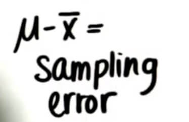

概念记录
参数 （parameters）
表示总体人数的数字被称为参数
总体参数 μ （population parameters）
抽样总体的平均得分叫做总体参数
样本统计量 x̅ （sample statistics）
样本的平均值叫做样本统计量
抽样误差 （sampling error）
两者之间的差别叫做 抽样误差

样本大小使用 n 来表示
自变量 Independent variable
额外变量（潜在变量）Extraneous(lurking) variable
因变量 Dependent variable
定量变量 Quantitative variable
预测变量 Predictor variable
单盲实验
实验对象不知道自己是否服用有效药片，但是研究人员知道
双盲实验
实验结果出来之前，研究人员和实验对象都不知道服用有效药片的人员
操作定义
什么是操作定义：
- 一种将构造（constructs）转变为我们可衡量的变量的方式
一种用我们衡量它的方式描述变量的方式
当选取了一种度量方法，就有了一种可操作的定义。我们通过这种可操作定义就可以在现实世界中度量构建
潜在变量（Extraneous variables）
□ 可为变量之间观察到的关系提供可能的另一种解释
□ 是会影响我们衡量的两个或多个变量之间关系的因素
□ 在我们做出确定的因果声明之前，必须在试验中加以控制
□ 使从观察性研究的数据中确定因果关系变得困难
随机样本
□ 以选中概率相同的方式选择个体。
□ 以选中一个个体不会影响另一个个体被选中几率的方式选择个体。
在试验中，研究人员操纵 (自) 变量，测量 (因) 变量的变化，然后尝试控制(潜伏)变量。
错题记录
- “你每天所走的距离” 这是一个抽象概念！
A construct is a variable that is not directly observable or measurable, and units are at the heart of measurement. What units do you think should be used to measure distance? Some possibilities are miles, kilometers, calories expended, state lines crossed, road signs passed, etc.
单位是度量的核心，没有带单位的概念都可以认为是一个抽象概念，比如“你的年龄” ，年龄可以用年来度量，也可以是表示一个人的心智成熟程度，或者用天来衡量。